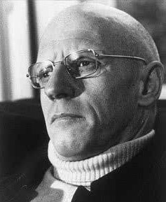

A filosofia de Michel Foucault
Entenda essa filosofia
A filosofia de Michel Foucault
Foucault tornou-se amplamente conhecido por seus trabalhos onde discute as relações de poder na sociedade. Esta temática, já encontrada em suas primeiras publicações, ganha destaque a partir do ano de 1970, quando o filósofo passa a ministrar cursos sobre o assunto no Collège de France. Nestes cursos, Foucault examinou as diversas estruturas políticas engendradas pelas sociedades ocidentais, desde a antiguidade greco-romana à contemporaneidade.
Para o filósofo, o poder encontra-se sempre associado a alguma forma de saber. Sendo assim, exercer o poder torna-se possível mediante conhecimentos que lhe servem de instrumento para atingir os objetivos almejados e justificativa para o uso desse poder. Segundo Foucault, em nome da “verdade” de um detentor de poder, legitimam-se e viabilizam-se práticas autoritárias de segregação, monitoramento, gestão dos corpos e do desejo
Inversamente, é no centro de aparatos sofisticados de poder que sujeitos podem ser observados, esquadrinhados, de maneira que deles sejam extraídos saberes produtores de subjetividade.Atendo-se a uma análise nominalista, Foucault recusa-se a pensar o poder enquanto coisa ou substância, as quais seriam possuídas por uns e extorquidas de outros. Segundo o pensador, o poder opera de modo difuso, capilar, espalhando-se por uma rede social que inclui instituições diversas como a família, a escola, o hospital, a clínica. O poder é, por assim dizer, um conjunto de relações de força multilaterais.
Como você pode ver, as reflexões do filósofo consistem na tentativa de estabelecer uma análise que escape às teorias políticas tradicionais. Nas análises clássicas as relações de força são pensadas a partir do modelo do contrato social, da luta de classes, ou ainda da figura de um Estado absoluto e opressivo em oposição à sociedade civil.
Dessa maneira, contrapondo a filosofia tradicional, Foucault acredita que o poder não atua em conformidade à lógica binária dos dominadores versus dominados. Isso quer dizer que não é da onisciência de um soberano-que-tudo-sabe que o poder emana ou conserva-se. Ele irradia-se de modo microfísico, sem possuir um centro permanente
Sob esta ótica, as relações de força seriam móveis e suscetíveis de se modificarem, compondo arranjos transitórios dados a uma constante transfiguração. Será tal mobilidade que permitirá Foucault contemplar a possibilidade de resistência face ao controle, reconhecendo-a enquanto elemento indissociável de seu exercício.
© Produzido por: Tainá Silva e Vithória Gomes, Inc